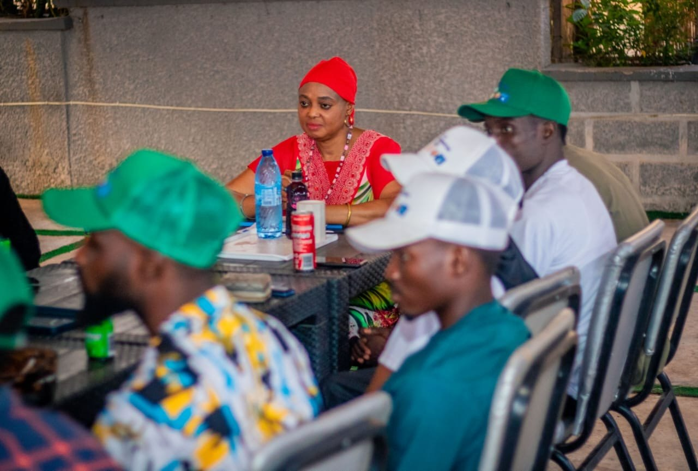
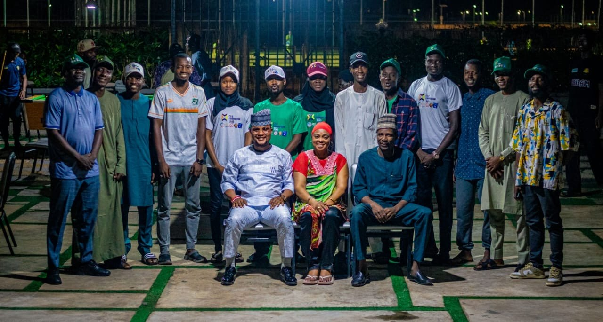

PURPOSE • PEOPLE • POSSIBILITY
Don’t lose your purpose.
Evidence-based coaching and mentoring for people navigating life’s turning points — from professional burnout and retirement transitions to young people finding their next step.
DR GRACE OBAR · COACH · MENTOR · LEADER
30+ yearsin finance and leadership*
Evidence-informedcoaching approach
UK & internationalonline conversations
*Career and qualification details are subject to final client approval.
A CAREER SHAPED BY PEOPLE AND PURPOSE
Business experience. A human approach.
I bring together more than three decades of experience in finance and leadership with learning in applied positive psychology and coaching psychology. My work is practical, thoughtful and centred on the person in front of me.
SUPPORT FOR LIFE’S TURNING POINTS
Make space for a clearer next step
You may be carrying too much, considering what comes after a long career, supporting a young person, or looking for a stronger approach to staff wellbeing. Explore the service that speaks to your situation.
A PRACTICAL FRAMEWORK FOR EACH JOURNEY
Thoughtful support, with a clear direction
REST supports burnout recovery. SAGE supports life and career transitions after 55. RISE helps young people build confidence, identity and a direction that feels like their own.
WORKING TOGETHER
Support that recognises the whole person
I work with individuals, education providers, employers, charities and healthcare organisations. We can begin with a relaxed discovery call or a practical scoping conversation.
HOW I CAN HELP
Find the support that fits
001
Burnout Recovery
A considered route from constant pressure towards a more sustainable way of working.
Explore 002Life After 55
Make space for the questions, possibilities and practical choices of your next chapter.
Explore 003Young People (16–25)
A respectful coaching space to explore strengths, choices and next steps.
Explore 004Colleges & Universities
Student coaching and programme support for learning providers.
Explore 005Workplace Wellbeing
Wellbeing and burnout-prevention programmes for teams and leaders.
Explore 006Business Mentoring
An experienced sounding board for leadership and business decisions.
ExploreBEHIND THE WORK
People, learning and shared progress
Coaching and mentoring are rooted in real conversations, thoughtful collaboration and the belief that people can find new ways forward.



THREE SIGNATURE FRAMEWORKS
Different journeys. A shared belief in human potential.
A GOOD PLACE TO BEGIN
There is room to think about what comes next.
Start with a conversation. No pressure, no assumptions — just a chance to explore what would be useful.
Get in touch